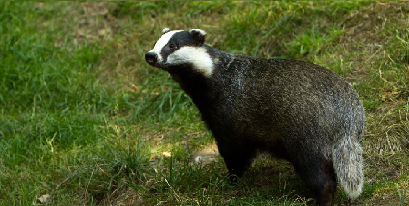

The honey badger (also known as a ratel) is a short but powerfully-built mammal in the weasel family. It is found in Africa, the Middle East and India.
Despite being relatively small, the species has a reputation for being fierce and seemingly fearless. Its thick skin and powerful claws and teeth allow it to hold its own against animals much larger than itself.
The honey badger's long body is carried on four short legs. It has a long neck and a short, bushy tail. Its eyes are small and dark and its ears barely protrude from the sides of its face.
The honey badger's face, sides and undersides are covered with thick, black hair. The top of its head and its back are covered with a continuous patch of grey-white hair.
The honey badger's skin is tough and loose-fitting. This is a useful defensive adaptation; even if the honey badger finds itself clamped in a larger animal's jaws, thanks to its loose skin it is able to turn round to bite the would-be predator.
The honey badger is tougher than it looks, as many African predators have found to their cost. As well as having extremely tough skin, the honey badger is equipped with some impressive weaponry.
The claws on the honey badger's forepaws are long, curved and powerful (the claws on the hind feet are comparatively short) and its mouth is full of short, sharp teeth.
The honey badger is the largest mustelid (member of the weasel family, Mustelidae) found in Africa, but it is by no means the largest predator on the block. It shares its habitat with lions, hyenas and a plethora of other dangerous animals.
The honey badger weighs slightly less than a coyote, and is a similar size and weight to a European badger.)

The honey badger is extremely adaptable, and is able to live in a wide range of habitats, including rainforests, savannas, grasslands and deserts.
Adult honey badgers usually live alone, only pairing up during the breeding season. They are primarily nocturnal, but can be active at any time of the day, especially in areas uninhabited by humans.
The honey badger is not strongly territorial. A male honey badger has a large home range, which can cover up to 500 km2 (193 square miles). This will take in the home ranges of several females, and will also overlap with the home ranges of other males. Honey badgers leave scent markings to communicate with each other.
Honey badgers produce a range of sounds, including grunts, growls and whines. When they meet they will sniff each other and roll around, leaving scent marks on the ground.
The honey badger is a highly intelligent animal and there is some evidence of it using objects as tools. Captive animals have been observed piling objects on top of each other in order to escape from an enclosure. Another individual was seen to move a log in order to be able to reach some food.
Fearless Honey Badger Takers On 6 Lions
The Meanest Animal In The World